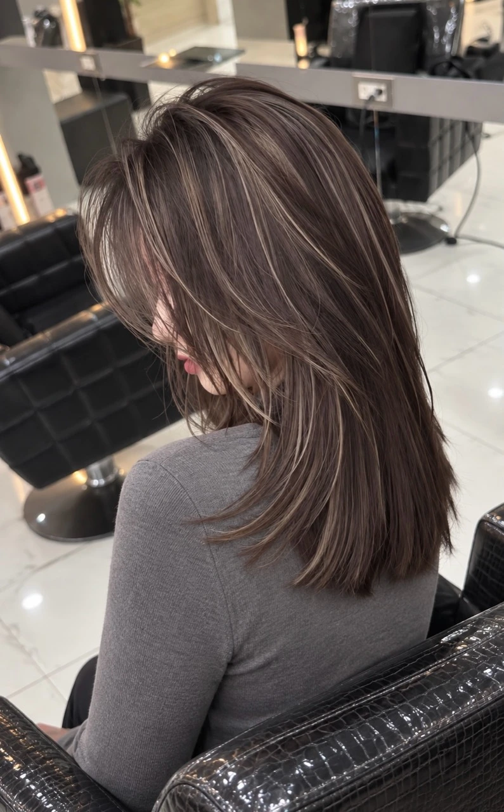

COOPER · 髮型設計
好看，也要
適合你的日常。
想換髮色、調整輪廓，或讓白髮自然一點。
從你喜歡的樣子，和在意的事開始。
剪髮 · 客製刷染 · 白髮共存 · 單色染

真實作品選輯
先看看，喜歡哪一種。
點「看完整照片」看細節；喜歡就按「收藏這款」，之後一起帶到 LINE 聊聊。
照片保留原色與比例；同一案例會註明不同角度，並非前後對照。
預約前，先安心
你在意的，我們先聊清楚。
點選你的疑問，看看我會怎麼和你討論。
把細節看清楚
自然的刷染，差別在哪裡？
從髮根到髮尾，
都要接得自然。
點選下方部位，看照片裡的設計重點。照片上的數字會同步標出位置。

01 / 03
數字只是標出照片裡看得到的地方，不是實際染髮的位置。
還沒有想法，也沒關係
從你的日常，
找到適合的方向。
依序選 3 個答案，看看適合討論的服務和作品。
不用填資料，選完也不用立刻預約。
點選最接近你的選項，就會進入下一題。
一起決定，這次怎麼改變
可以怎麼設計？
點選服務名稱，展開做法與評估重點。
剪裁輪廓剪髮
依臉型、髮流與平常整理方式調整輪廓和層次，讓髮型回家自己整理也有樣子。
我會先看髮流、髮量分布、你的整理習慣
客製刷染手刷線條
依層次與髮量決定線條的粗細、密度與位置，深淺自然融合，避免一條一條的分界感，也考慮留長後的銜接。
我會先看層次、髮量、分線與綁髮習慣、目前底色
白髮共存讓白髮變成設計
依頭頂、分線與鬢角的白髮分布安排線條，讓白髮成為設計的一部分，並把新生髮的銜接一起規劃。仍需依生長與退色安排維護。
我會先看白髮分布、生長速度、你想保留的自然感
單色染不做線條的髮色
不做線條，也能有好看的髮色。依膚色、底色與喜歡的明暗挑選色調，在意光澤與整體的一致。
我會先看目前底色、過去染燙紀錄、想要的亮度
費用與所需時間，依髮長、髮量與目前髮況評估後，於 LINE 說明。
離開座位以後
回到日常，也喜歡。
客人傳來的真實回饋。
客人傳來的真實訊息，匿名節錄；與作品照片未配對，每個人的髮況與感受不同。
你的問題，先放在這裡
預約前，你可能想知道。
點一下問題，就能展開答案。
需要漂髮嗎？我很在意髮質。
依目前底色、過去染燙紀錄與想要的亮度評估。染漂會影響髮況，會先說明可行方向與後續保養，再一起決定這次做到什麼程度。
白髮長出來後，需要一直補染嗎？
白髮共存會把新生髮的銜接納入設計，但仍需要維護。白髮分布、生長速度與你想維持的樣子都會影響整理間隔，並不是做一次就永遠不用再染。
預約前，要準備什麼？
不用特別準備。可以說說你喜歡的樣子、最近的染燙經驗，或你最擔心的地方，我們再一起討論。
費用和店址在哪裡看？
費用會依髮長、髮量與髮況評估後說明；店址與營業時間，預約時於 LINE 告知。
預約
想改變，
我們從聊聊開始。
還不確定要做什麼也可以。
告訴我你喜歡的感覺，或現在最困擾的地方。
- 01用 LINE 告訴我想要的感覺
- 02說明方向、費用與需要的時間
- 03約好時間，見面再確認一次